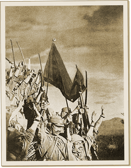

|
j
a v a s c r i p t |
April 9, 1942
I didn't feel another aftershock at 0858 as I was swinging in the porch. On the way downtown I passed a Spaniard from our block. He had gone to bed feeling like a feather after six or seven shots of whiskey to celebrate his wedding anniversary, and woke up with the bed doing "queer turns." He thought it was the alcohol: "I'm out of practice." The morning BBC broadcast mentioned Bataan fighting had reached the critical stage, with Japanese reinforcements staging their greatest attack of the war on the USAFFE's "new" positions. Downtown today, people talked less and worried more than ever. No doubt this is the climax. If the Japanese can break completely through at any single point, they will rush troops in so fast the gap will never be closed.

Bataan Falls
It is now 2120 as I write this with a heavy heart and only with great effort. I'm sweltering here on a tropical night with a dull pain throbbing all over and my mind almost a perfect blank. It all happened with such suddenness that Manila at 1800 was in a death-pall. Trucks, buses and cars with smiling Japanese swarmed all over. The rumor began at 1400 and reached a symphonic crescendo by 1700: Bataan had fallen. We had a softball game on during the afternoon (imagine that — only forty kilometers across Manila Bay to Bataan) when M. Nieto came up to me with a queer look on his face. "You know what they're saying? Bataan has fallen." "I don't believe it," I cried, remembering at the same time that VoF had failed to issue a communiqué at 1230. "The Japs announced it at San Miguel Brewery and at La Salle," added Nieto. I was the first off the field on a mad dash for home to get at the radio, noticing the Japanese riding around with smiles that hadn't been there since January 2. The last seven minutes of the local news didn't mention Bataan. An inner voice kept pounding, "It can't be...." I felt like shouting "No!" in denial. After a cold shower, I tuned in to the KGEI at 1800 but Bataan wasn't mentioned at all. At 1830 Maurice came by with Tom Pritchard's boy, who said he knew it for a fact. His father runs the famous Tom's Dixie Kitchen restaurant and he told me several of the Filipino waitresses just burst out crying, and two of them decided to get drunk. At 1930, VoF gave it to us full blast: This is the Voice of Freedom, bringing you the true and uncensored news of the day ... Bataan has fallen. I couldn't hear the rest very well because of interference but what more did I need? At 2000, London on the 25-meter band via Australia quoted a war department communiqué saying Wainwright had reported the Japanese had "succeeded in enveloping our east flank, and an attack ordered to relieve the situation failed due to complete physical exhaustion. In any probability, the Bataan defenses have been overcome." I told Ma, Pa and Maurice. We are all wondering how Joe in Bataan must be feeling at this moment, if he is alive; if he hasn't been wounded. What a bitter pill! The thought that a man could be so exhausted that the end of fighting comes as a relief. Now, in retrospect, flashes of sanity overcame me. That I thought Bataan could hold out...that I hoped it would! In January I gave up the Philippines for lost; how in April could I believe in further resistance? No air support — that was a telltale. The Japanese had been "all-out" in the air for three months. If ever U.S. planes were needed, that was the time. But none came. The irony is that Torno told Maurice that he'd bet me P50 that the USAFFE would be back in Manila by the end of May, and it was all over before I could take him up on that. If Bataan stunned us, can you imagine what it did to the many others who persisted in seeing U.S. planes in the air everyday? The USAFFE must have surrendered around noon because yesterday there was heavy air activity in the early morning then hardly any that afternoon. At 2100 tonight, all Radio Tokyo had to say of Bataan was that "...on Wednesday the Americans announced they had continued retreating. Their defenses have apparently reached the last stage." Local radio still hasn't reported anything. Strange — a rampage of lies in defeat but quiet in success. |
|
|
|
|